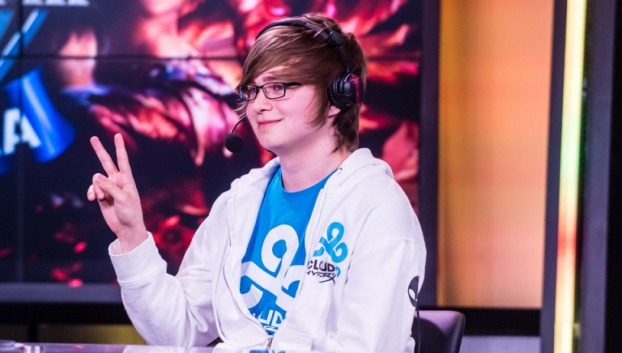
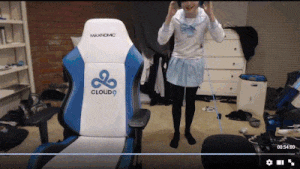
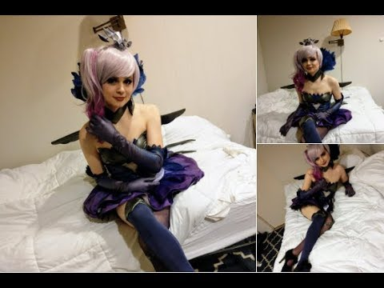
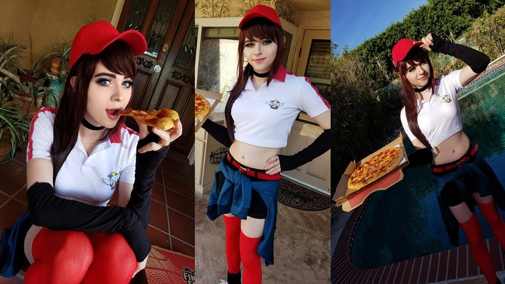

Born in Winter Springs, Florida, Zachary "Sneaky" Scuderi first joined the NA LCS (North American League of Legends Championship Series) with Team Quantic Gaming on April 6th, 2013. After qualifying, Cloud 9 quickly sponsored the team and Team Quantic Gaming became Cloud 9. Sneaky is currently the only remaining member of Cloud 9 that was on the original Cloud 9 team.
Sneaky has been a streamer on Twitch.tv since September 2th, 2011. He's currently ranked 36th in how many people have followed his streams, and is ranked 87th in channel views. His personality is best described as a laid back memer of a streamer. He's famous for having his "thank you" for when someone subscribes to his channel be "Welcome to my Butthole" because that's just the kind of guy he is. Recently Sneaky has delved into a new realm of his streaming career...
Sneaky began his cosplaying career with a few silly outfits to show just again how dorky of a character he is. We see him here in a classic Maid outfit most likely referencing the French Maid Nidalee Skin.
 This is an example of a SchoolGirl cosplay he did awhile back just for fun. Doing these cosplays usually earns him a lot of donations because everybody wants to have their silly (and sometimes inappropriate) messages read onto his stream while he's wearing something ridiculous.
 A new age has emerged for our 24 year old. Recently Sneaky's girlfriend Lynn, who cosplays herself, has taken up the art of doing Sneaky's makeup and finding him outfits for him to cosplay. This Dark Elementalist Lux cosplay was the first in this new chapter. The second professional looking cosplay he did was the Pizza Girl Sivir outfit. Sneaky has said that he would definitely not be doing this if his girlfriend wasn't the one doing the makeup and outfit.  "Pizza Delivery Sivir"